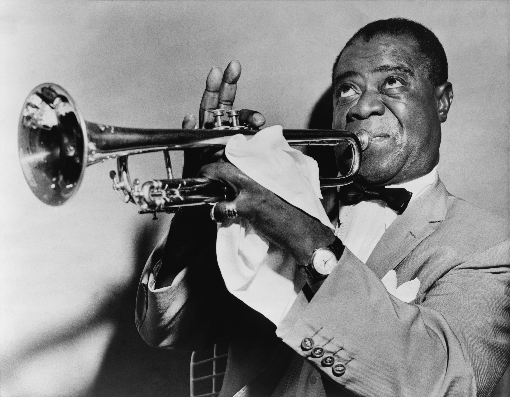

Jazz
Rozdělení
hudba vokální
hudba instrumentální
- Ragtime
- používá se synkopa
- hrává se na klavír
- představitel - Scott Joplin
Základy a začátky
- na přelomu 19. a 20. století se začali černí obyvatelé stěhovat do měst - nejčastěji do New Orleans
- zde si kupovali hudební nástroje, vytvářeli kapely, se kterými pochodovali po městě - pochodový jazz
Pochodový jazz
- začal brzy plnit funkci taneční hudby
- skupiny nástrojů
- melodické
- trubka
- pozoun
- klarinet
- rytmické
- klavír
- kontrabas (brnkání)
- bicí nástroje
- nyní jsme u zrodu klasického jazzu
Klasický jazz
- nejvýznamnější autor - Louis Armstrong
Louis Armstrong
- narozen 4. srpna 1901 v New Orleans
- umřel 6. července 1971 v New Yorku
- přezdívky - Pops, Satchmo
- hrát na trubku se naučil v polepšovně
- obohatil jazzovou hudbu
- improvizace
- nové možnosti hry na trubku
- scat - zpěv na slabiky
Swing
- 30. léta
- jednalo se o hudbu nejen k poslechu, ale i k tanci - Jive
- hudbu provozovali velké orchestry - Big bandy
- nový melodický nástroj - saxofon
- nejvýznamnější orchestry
- Orchestr Duka Ellingtona
- Orchestr Bennyho Goodmana
- Orchestr Glenna Millera
Osvobozené divadlo
- první swingový orchestr u nás
- nejvýznamnější
- Werich, Voskovec - psali divadelní hry + v nich hráli, psali texty písní
- Ježek - řídil orchestr + skládal hudbu
Jana Wericha také znáte z pohádek, jako jsou: Byl jednou jeden král, Císařův pekař, Pekařův císař atd.